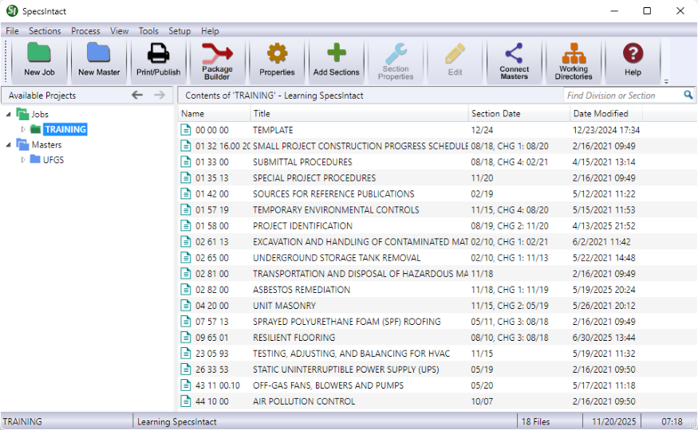

The SpecsIntact Explorer provides a familiar and intuitive workspace for efficiently managing your projects. Designed to streamline your workflow, it features a comprehensive Menu Bar and Toolbar that provides quick access to essential commands and functions to effortlessly create, edit, organize, and produce your specifications with ease.
 Click the commands on the image below to learn about the functions available in the SpecsIntact Explorer.
Click the commands on the image below to learn about the functions available in the SpecsIntact Explorer.

Explorer Functions
Drag-and-Drop:
 The SpecsIntact Explorer's drag-and-drop functionality provides the capability to easily add Section(s) to a Job or local Master. You can also use this feature to drag-and-drop Section(s) or other files, such as exported files, reports, PDF files, or Word files from the SpecsIntact Explorer to other Windows applications like the Windows Desktop, File Explorer, or Outlook messages.
The SpecsIntact Explorer's drag-and-drop functionality provides the capability to easily add Section(s) to a Job or local Master. You can also use this feature to drag-and-drop Section(s) or other files, such as exported files, reports, PDF files, or Word files from the SpecsIntact Explorer to other Windows applications like the Windows Desktop, File Explorer, or Outlook messages.
This includes the ability to drag-and-drop Sections or PDF files from Windows File Explorer into the SpecsIntact Explorer to add to a Job or local Master.
 This feature allows for easy drag-and-drop of multiple Sections. To select a consecutive group of Sections, press-and-hold the Shift key while making your selections. If you need to select non-consecutive Sections, press-and-hold the Ctrl key instead.
This feature allows for easy drag-and-drop of multiple Sections. To select a consecutive group of Sections, press-and-hold the Shift key while making your selections. If you need to select non-consecutive Sections, press-and-hold the Ctrl key instead.
Copy and Paste:
 Use this function to copy and paste Sections or other files from the SpecsIntact Explorer to other Windows applications or from one project to another. Additionally, you can use the standard Windows keyboard shortcuts to Copy (Ctrl+C) and Paste (Ctrl+V).
Use this function to copy and paste Sections or other files from the SpecsIntact Explorer to other Windows applications or from one project to another. Additionally, you can use the standard Windows keyboard shortcuts to Copy (Ctrl+C) and Paste (Ctrl+V).
 To learn more about the Copy and Paste functions, refer to the SpecsIntact Explorer's File menu > Add Sections or the Sections menu > Copy.
To learn more about the Copy and Paste functions, refer to the SpecsIntact Explorer's File menu > Add Sections or the Sections menu > Copy.
Icon Colors:
Icon colors offer extensive personalization options for folder and file icons by assigning new colors to the main Jobs and Masters folders and various file types. Changing the color of the main Jobs or Masters folders applies that color to all Jobs and Masters system-wide. You have the flexibility to select pre-defined colors, choose colors from an extensive palette of colors, or create custom colors to distinguish these elements visually within the SpecsIntact Explorer.
columns:
The Contents Panel displays columns that allow you to select the columns to display and sort your documents by various categories. The columns shown will differ based on whether you've selected the main Jobs or Masters
or Masters  folder, or an individual Job
folder, or an individual Job  or Master
or Master  folder. You can also reorder these columns.
folder. You can also reorder these columns.
Resize Windows:
An interface that allows you to adjust the size of the application window.
 To learn more about resizing windows, refer to the SpecsIntact Explorer's View menu > Status Bar topic.
To learn more about resizing windows, refer to the SpecsIntact Explorer's View menu > Status Bar topic.